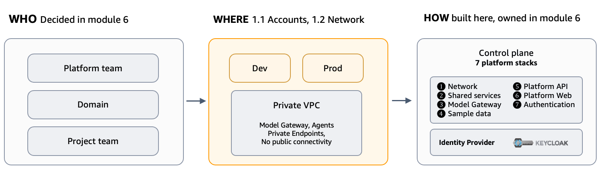
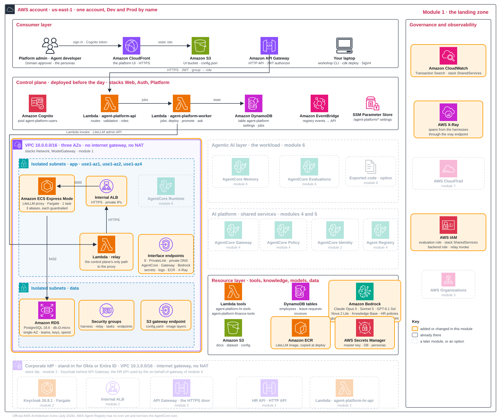

Why this layer first Explain · 10 min
An agent platform stands on three things:
- AWS accounts: where the platform's resources live.
- Network: how those resources connect.
- Infrastructure code: how the foundation is provisioned.
These form the landing zone. Build it first: changing accounts or networking later means moving the resources that depend on them.
This module covers two decisions:
- Accounts: how many do you need, where do resources run, and who may administer them?
- Network: private with a NAT exit to the internet, or private with no exit at all?
Who creates the infrastructure, who builds and runs the agents, and how much freedom each project gets are decided together in module 6, Project blueprints and delivery, where the project's path to Prod is built. They do not determine the account count: account layouts can change without changing responsibilities.
Keep two related questions separate from ownership and account placement:
- Tenant boundaries: whose data, credentials, actions and records must stay separate, and what enforces that separation? We introduce this in 1.1 and develop it in decision 3.1. Tenants can share or span accounts; tenancy does not determine who runs the platform.
- Platform usage: who uses the platform, and through which business channel or interface? This workshop uses the platform's Playground and API, introduced in module 6.

Decisions Design · 10 min
1.1How many AWS accounts?
| Option | Pros | Cons | Choose when |
|---|---|---|---|
| Recommended Platform account + workload accounts | central tool governance; teams own runtimes | cross-account trust to design; most moving parts | many teams, central governance |
| This workshop One account, environments by name | simplest, cheapest, fast promotion | names and IAM are the only walls; one mistake can affect everything | a pilot, one team, a first platform |
| One account per environment | Prod behind an account wall | moving to Prod crosses accounts; more plumbing | compliance demands Prod isolation |
| A full copy per project team | autonomy; simple trust | duplicated governance; copies drift | teams must not depend on each other |
This workshop. We use one AWS account with two environments, Dev and Prod. Names and IAM keep them apart. Promotion stays within the account, keeping it fast and simple.
We also made two location choices:
- Platform Region: us-east-1.
- Model processing: cross-Region inference profiles. A request entering us-east-1 may be answered in another US Region.
We revisit processing location in decision 5.3 and the organisation's SCP controls in decision 3.2.
The workshop has two tenants: People Operations and Finance Operations. Project IAM roles and gateways enforce their data boundaries.
A tenant name in a prompt, URL or request body is user-supplied text, not proof of membership.
Production path. The recommended layout A uses two account types:
- Platform account: shared services.
- Workload accounts: each team's agents.
SCPs apply consistent organisation-wide rules across them.
1.2Private network: with or without an internet exit?
| Option | Pros | Cons | Choose when |
|---|---|---|---|
| Private with a NAT exit: your VPC, no public addresses, one shared way out; endpoints optional | anything on the internet stays reachable (public model APIs, package registries, SaaS tools); fewer endpoints to run | an exit exists, so data can leave unless outbound is filtered; NAT hourly and per-GB cost; only some Availability Zones work | private data sources, and agents that still need the internet |
| This workshop Private with no exit: interface endpoints only, no NAT, no internet path | nothing in the VPC can reach the internet, so a leaked key or an injected prompt cannot call out; the proxy has no public address | only AWS services with an endpoint are reachable, so non-AWS dependencies need a copy inside (the LiteLLM image goes to ECR first); an endpoint for every service the agent calls, each billed by the hour (about 0.18 USD per hour here); only some Availability Zones work; a relay for every caller outside the VPC; slower cold starts | regulated, mature operations; or when the platform must be safe from its first day |
This workshop. A and B differ in one exit. A keeps a NAT gateway, so anything in the VPC can still reach the internet and endpoints only save cost; B removes the exit, so only the AWS services with an endpoint are reachable and nothing else. We choose B to prevent internet access from the VPC. One private VPC spans the three Availability Zones supported by AgentCore Runtime and has two subnet types:
- App subnets: the LiteLLM proxy and its internal load balancer, the relay Lambda, the interface endpoints and, from module 6, the network interfaces of the agent harnesses. A harness is AgentCore's configuration-driven agent, the form our agents take in module 6;
workshop apply 1already creates the security groupagent-platform-harnessfor them. - Data subnets: the database, and nothing else.
Both groups are isolated subnets. Their route tables know the VPC itself and the S3 gateway endpoint, nothing more, so neither has a path to the internet. The data subnets are a separate group only so the database sits in its own address range, apart from the application components; its security group accepts PostgreSQL from the LiteLLM tasks alone and allows no outbound connection at all. The agent harnesses run in VPC mode. There is no internet gateway, NAT gateway or public IP anywhere in the VPC.
AWS services are reached through two kinds of endpoint:
- Nine interface endpoints, which the VPC console and the
workshop apply 1output name by service:bedrock-runtime(the proxy's model calls),bedrock-agentcore(the AgentCore data plane: Runtime, Memory and Identity),bedrock-agentcore.gateway,secretsmanager,logsandmonitoring(CloudWatch logs and metrics),xray, andecr.apiwithecr.dkrfor image pulls. There is no endpoint for the AgentCore control plane: nothing inside the VPC creates or configures AgentCore resources; the control plane does that from outside. - One gateway endpoint: S3.
Without internet access, tasks must pull the LiteLLM image from private ECR. workshop apply 1 copies it into your account first, adding a few minutes to deployment.
The quoted hourly estimates cover two components:
- Endpoints: about 0.18 USD per hour (nine endpoints in two zones).
- Proxy: about 0.10 USD per hour.
The database is single-AZ for the workshop.
Outside the VPC. The control plane's web UI, API and worker remain outside, along with Cognito and Agent Registry.
Those two services have no PrivateLink endpoints. A control plane in an isolated VPC could not manage sign-in or read the catalogue. Its AWS management calls use IAM authentication and TLS.
Module 2 adds one more thing outside this VPC: the corporate identity provider, Keycloak, which stands in for the Okta or Entra ID a company already runs. workshop apply 2 gives it a small public VPC of its own (10.1.0.0/16: two public subnets, an internet gateway, no NAT, no endpoints), because a company's identity provider must be reachable over the public internet: AgentCore Identity and API Gateway fetch its discovery document and call its token endpoint there, exactly as they would for a SaaS provider. Keycloak itself sits behind an internal load balancer, with an API Gateway HTTP API as its HTTPS door. The two VPCs are never connected, and the landing zone you build here stays as described.
The internal load balancer cannot be called directly from outside the VPC. Three callers therefore use the relay Lambda:
- The control plane: the platform API and worker Lambdas.
- The
workshopcommand and the doctor on your laptop (the doctor runs at the end ofworkshop apply 1). - Other code on your laptop: the agent code module 6 exports.
workshop export --runstarts a small local proxy that forwards its calls through the relay.
The relay forwards HTTP requests without adding credentials. IAM controls relay invocation; the proxy also requires its master key. Module 5 revisits this flow and explains why the proxy's admin console is unavailable in a browser.
Production path. Add three controls to this private network:
- Multi-AZ database: run the database across more than one Availability Zone.
- Endpoint policies: restrict each interface endpoint's access and scope the S3 endpoint to the platform's buckets.
- AWS WAF: protect the internet-facing web UI and API.
Your design record, module 1
module_1:
inputs: none # workshop apply 1 deploys the landing zone as designed
decisions:
accounts: {workshop: one-account} # Dev and Prod by name; reference: platform + workload accounts
network: {workshop: private-endpoints} # one private VPC, endpoints only: no internet pathEach module has one design-record block with two parts:
inputs(shown in bold): values read by the apply command. Module 1 has none because its landing zone is predefined.decisions: what this workshop chose. Each decision on the page also marks the Recommended reference option where one exists; it can differ from the This workshop choice.
Hands-on 20 min
Use Get started to fetch the code, run uv sync and npm install, then check three prerequisites:
- Environment active:
source .venv/bin/activate, or.venv\Scripts\Activate.ps1in PowerShell. Otherwise, useuv run workshop …. - AWS credentials set: paste the event's credentials into your terminal.
- Account ready: run
workshop status. It lists eight stacks. The four pre-deployed ones (Web, Auth, Platform, Scenario) read CREATE_COMPLETE; the three landing-zone stacks andAgentPlatform-Idpread not deployed (in a pre-provisioned account the three landing-zone stacks already read CREATE_COMPLETE: runworkshop apply 1 --no-deploy).AgentPlatform-Idpis the corporate identity provider (Keycloak) thatworkshop apply 2deploys in module 2, so leave it for now.
- commandConfirm
workshop apply 1has finished. It deploys three stacks: network, shared services (guardrail, tracing and evaluation role), and model gateway. After the deploy, its first section lists all eight stacks;AgentPlatform-Idpstays not deployed until module 2. Deployment takes about 20 minutes while the database, proxy and relay are created and the LiteLLM image is copied. - screenCloudFormation console: find the three new stacks beside the four pre-deployed stacks for the control plane and sample data.
- screenVPC console: find one VPC and six subnets, three named
appSubnetand three nameddataSubnet, with no internet gateway or NAT gateway. Both groups are isolated: each carries the tagaws-cdk:subnet-type = Isolated, and every route table holds only the local route and the S3 endpoint. Under Endpoints, find nine interface endpoints and one S3 gateway endpoint. Open one of them: its network interfaces sit in two of the three Availability Zones, not all three. Callers in the third zone reach the endpoints across zones, which works and saves a third of their cost: nine endpoints at about 0.01 USD per zone-hour each come to about 0.18 USD per hour instead of 0.27. The proxy, database and relay are the components here today; the agent harnesses join in module 6, and the security groupagent-platform-harnessalready waits for them. - commandWhen the stacks are complete,
workshop apply 1looks at what appeared and prints four sections before the doctor. First, the eight stack rows with their CloudFormation status;AgentPlatform-Idpstill reads “not deployed” with a warning, as expected before module 2. Second, the VPC with its subnets, zones and endpoint lists, and the line private posture: no internet gateway, no NAT gateway, no public IP. Third, a health call to the model gateway (GET /health/liveliness) that travels through the relay Lambda, because nothing outside the VPC can open a connection to the proxy, followed by the three approved model aliases and the guardrail bound to each. If it says the gateway “did not answer yet”, the ECS Express service needs a minute after the stack completes: wait, then runworkshop apply 1 --no-deployto repeat these checks and the doctor without redeploying. Fourth, the table of settings the platform published under/agent-platform/in SSM Parameter Store (the web UI and API URLs, the model gateway and its relay, the guardrail, the knowledge base and the HR tools Lambda); every laterworkshopcommand starts by reading this tree. - commandRead the doctor's checks at the end of
workshop apply 1. Personas marked “not created” andKeycloak IdP URL: not deployedare expected: you create both in module 2. - recordOpen
design-record.yamland read the module 1 record entries. Compare eachworkshopvalue with the option marked Recommended on this page, and runworkshop recordto check the file.
If deployment fails part-way, rerun the same command. Completed stacks are kept; deployment resumes where it stopped.
Before moving on, confirm four outcomes:
- Deployment: three landing-zone stacks complete, alongside the four pre-deployed stacks.
- Network: the expected private subnets and endpoints, with no internet path.
- Model gateway: the health call answered through the relay and the four aliases were listed.
- Design record: module 1 entries read;
workshop recordreports no problems.
Further reading: account strategies, Organizations and SCP limits, and an operating model template.
The platform after module 1
Your account now has two layers:
- Pre-deployed: the control plane (CloudFront, API Gateway, Cognito, two Lambda functions and DynamoDB) and sample data.
- Added here: three stacks. Network: the private VPC with three app subnets and three data subnets, all six isolated, nine interface endpoints and the S3 gateway endpoint. ModelGateway: LiteLLM on ECS Express Mode behind an internal load balancer, its PostgreSQL database, its secrets, the LiteLLM image copied into your own ECR repository, and the relay Lambda, the only way to the proxy from outside the VPC. SharedServices: three account-level pieces outside the VPC: the baseline guardrail
hr-baselinethat every approved model alias carries, CloudWatch Transaction Search, which makes the agents' traces searchable in module 7, and the IAM role AgentCore Evaluations assumes for the online evaluation that module 6 registers at promotion.
The figure uses AWS service icons. Faded boxes show later modules; the control plane reaches the model gateway only through the relay.

Services and resources shown: VPC 10.0.0.0/16; ECS Express Mode; internal ALB; relay Lambda; interface endpoints; RDS; security groups; S3 gateway endpoint; Bedrock; ECR; Secrets Manager; CloudWatch; X-Ray; IAM.
Glossary
- Landing zone
- The accounts, network and tooling a platform is built on.
- Operating model
- Who builds, releases, supports and operates the shared services and agents.
- Tenant
- A business unit or customer whose data, credentials, actions and records must stay separate.
- Control plane
- The platform's own web UI, API, state table and worker job.
- Model gateway
- The shared entry point for model requests. This workshop uses the LiteLLM proxy.
- Harness
- AgentCore's configuration-driven agent, the form our agents take from module 6. One is deployed per environment into the app subnets, in VPC mode, behind the security group
agent-platform-harness. - Account
- AWS's strongest isolation boundary.
- IAM
- AWS permissions: which role may call what.
- SCP
- An organisation-wide rule that a member account cannot override.
- NAT, endpoint
- NAT provides an internet exit; an endpoint provides private access to an AWS service. This VPC uses endpoints only.
- PrivateLink
- The feature behind interface endpoints: a network interface in your subnet answers the service's normal name, keeping the call on the AWS network.
- CDK
- Infrastructure written as code and deployed as stacks.